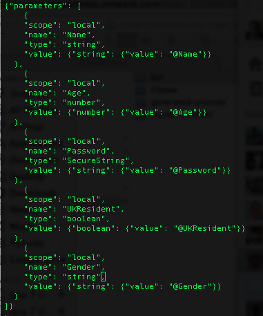
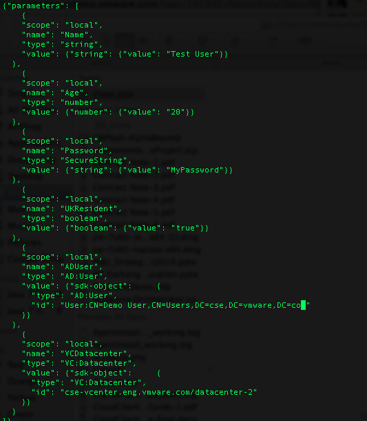
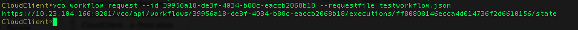
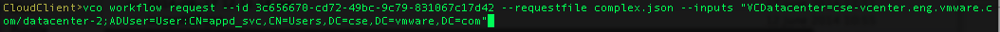

In order to request a new VCO workflow the input variables need to be passed in, this is done by creating a JSON input file in from the command which can be edited prior to the request OR by using the --inputs options.
vco workflow detail --id 39956a18-de3f-4034-b88c-eaccb2068b18 --requestfile testworkflow.json.

The file can then either be edited or inputs can be provided on the command line in order to supply the VCO workflow with correct input parameters.

Execute a new workflow with the command: vco workflow request
The result will return the URL, this can be additionally be called from the command vco workflow http get to get the workflow status

Input values can be passed in conjuntion with the requestfile or by providing all input values on the command line.
Note: Values are semi colon separated
